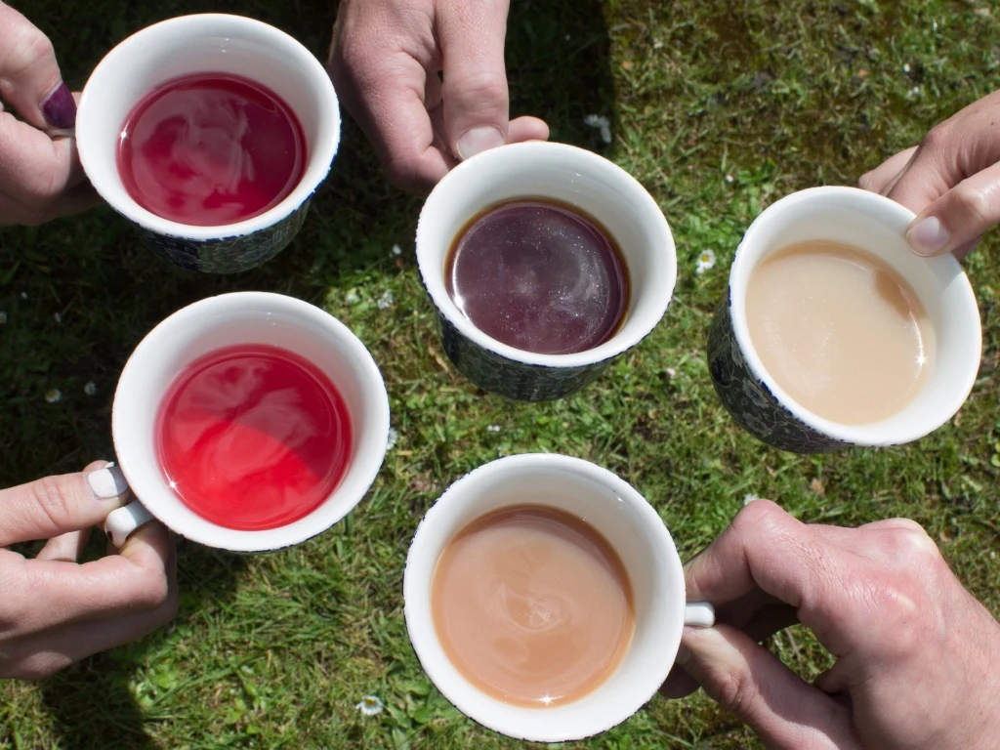

Our coffee products are crafted with care and precision, using the finest beans sourced from around the world. This ensures that every cup is rich in flavor and aroma. Hence allowing our customers to enjoy a truly exceptional coffee experience. Examples of our coffee products include: Arabica, Liberica, and Robusta.
Arabica: A high-quality coffee bean known for its smooth, sweet taste and aromatic fragrance.
Robusta: A hardy coffee bean with a stronger, more bitter taste and higher caffeine content.
Liberica: A rare coffee bean with a unique, floral flavor and a distinctive aroma.
Our tea products are carefully selected and blended to provide a delightful taste experience. We offer a variety of teas, including black, green, white, and herbal options. Each tea is sourced from reputable suppliers to ensure the high quality and freshness.
Black Tea: A fully oxidized tea with a robust flavor and bold aroma.
Green Tea: A lightly oxidized tea known for its fresh, grassy flavor and numerous health benefits.
Herbal Tea: A caffeine-free option made from a variety of herbs, flowers, and fruits, offering a wide range of flavors and health benefits.
